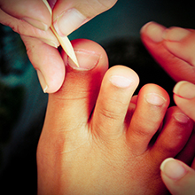

L'épanouissement, c'est aussi prendre soin de soi!
Pédicure médicale
Envie de vous faire chouchouter les pieds, dans un endroit hors du temps, prendre le temps de siroter un café dans notre commu? C'est désormais possible!
Une pédicure médicale s'installe au Banc-Public.
Le mercredi de 14h à 17h et le samedi de 10h à 13h.
20 euros par séance.
Rendez-vous au +32(0)492/40.40.84
Kinésiologie
Joséphine Comunale, kinésiologue spécialisée, s'installe au Banc Public.
Voici les thérapies proposées:
** Réflexologie plantaire (30 euros la séance)
** massage harmonisant (40 euros la séance)
** kinésiologie (40 euros la séance)
Nous vous invitons à visiter sa page web, toutes les thérapies y sont très bien expliquées.
Pour toute demande d'information et prise de rendez-vous, Joséphine Comunale: 0496/40.30.35
La Kinésiologie est une technique de bien-être et de développement personnel qui permet de débloquer des états de stress. C'est une approche globale de l'être humain.
C'est une méthode d'interrogation et d'harmonisation des énergies du corps, basée sur les principes de santé de la médecine chinoise.
LES BENEFICES RESSENTIS PAR LA KINESIOLOGIE.
- Utilisation de l'acupressure, pour améliorer l'équilibre postural et réduire la tension et la douleur mentale et physique.
- Réduction du stress et des tensions psychiques et physiques
- Libère des stress émotionnels de la petite enfance à l'âge adulte
- Développement de la confiance et soi
- Amélioration de la communication et de la concentration.
Sophrologie
L’harmonie vitale par la sophrologie est une méthode qui propose ses bienfaits à toute personne désireuse de vivre plus en harmonie avec elle-même et les autres dans son quotidien, par une meilleure connaissance de soi et de ses limites.
L'harmonie vitale par la sophrologie est bonne pour le sommeil, la fatigue, le stress, le changement, l'épuisement, l'estime de soi, la gestion des émotions, le lâcher-prise et l'anxiété.
Les séances se déroulent le lundi de 17 à 20h au Banc-Public. Elles sont animées par Christelle Varvenne, sophro-conseillère formée à l’Harmonie Vitale par la Sophrologie, reconnue par La fédération Wallonie-Bruxelles, Educatrice Spécialisée
Pour toute demande d'information et prise de rendez-vous, 0478/42.12.20